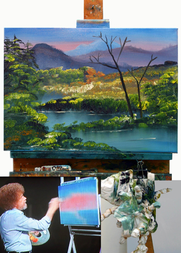
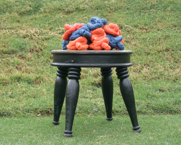

|
Rosemarie Fiore 1 - 31 May 2008 Thursday, 1 May First Friday Opening Also on view Prints by Calder, Gottlieb, Motherwell & others Limited edition stools by Irwin Berman  Rosemarie Fiore. Artist’s studio shot with oil painting, oil paint, tie dye T-shirt and Bob Ross video. Rosemarie Fiore's exhibit at Les Yeux du Monde is held in conjunction with a ten-year survey of her process paintings and
machine performances at Charlottesville's Second Street Gallery. Irwin Berman. Mondrian, 2001. Irwin Berman's limited edition stools are available this month from Les Yeux du Monde Gallery and on view at through June 15 at the University of Virginia Art Museum.  Irwin Berman. The Great Seal Trophy Stool. "Before the Cavalier, the University of Virginia's official mascot was "Seal," a googly-eyed canine with a shiny ebony coat who rose to infamy during a football game." Read more >
Still from The Great ‘Seal’ of Virginia: A Dreamscape depicts Seal, the University of Virginia’s old mascot, rising from the grave to feast on the Cavalier. Courtesy Michael Wartella Brian McNiell writes in the Daily Progress, "A three-minute animated film that tells the story of UVa’s second mascot, a 1940s-era cross-eyed mutt named Seal. According to UVa lore, Seal won the love of students after he pooped on the megaphone of an opposing school’s cheerleader at a football game." Read more > "Coming to the rescue of Seal's long-forgotten legacy, three University graduates and an Art Department Professor have "teamed up" in the production of a lively animated short film speculating on aspects of The Great Seal's “afterlife”." Read more > Brendan Fitzgerald review entitled "Load of" in C'ville, "Last week, Curtain Calls received a DVD copy of a three-and-a-half minute short film titled The Great “Seal” of Virginia, a companion piece to sculptor and UVa Med School alum Irwin Berman’s current exhibit..." Read more >
|


| © 1995-2012 All Rights Reserved. Les Yeux du Monde |